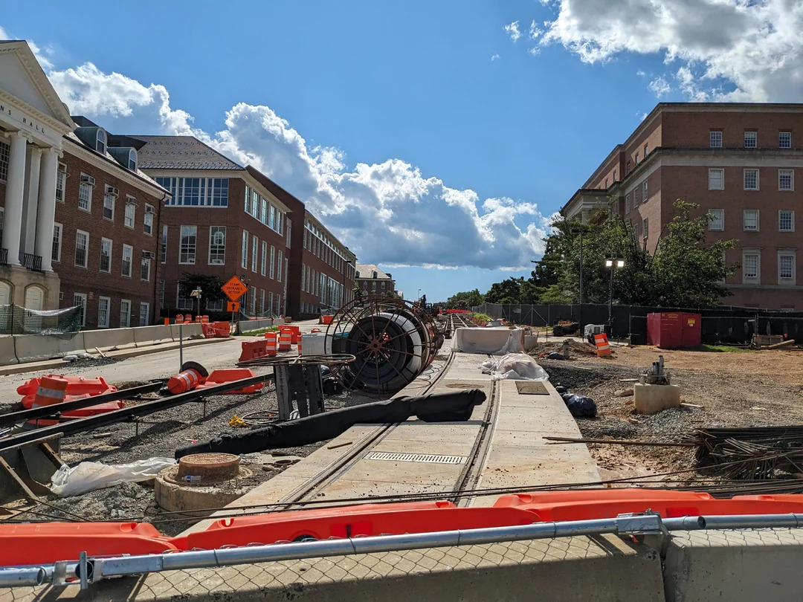
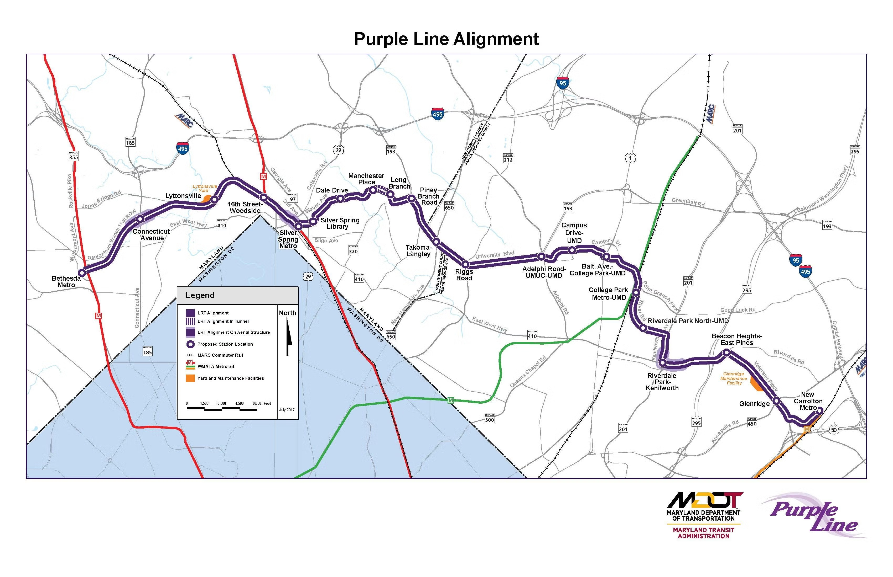

By Seann McCombie | December 9th, 2025
The reaction to the Purple Line construction in University of Maryland Students contains a mix of excitement for its future benefits and frustrations with current impacts, delays, and safety concerns the project brings.
Maryland’s Purple Line to the DC Metro is over 80% complete, with all light-rail cars delivered and its track installation nearing completion, leading to an expansion in dynamic testing.
Key College Park stakeholders, including UMD officials, residents, and students, hold varied perspectives as the project nears completion and moves into its testing phase.
There is an improved connectivity with this construction. As the Purple Line will connect College Park to four Metro stations, three MARC lines, as well as Amtrak, it will provide easier regional access for students and staff.
With this ease of access comes a wave of concern. The most common reaction from UMD students is frustration over the consistent construction, a common scene on campus.
As road closures, traffic jams, detours, and difficulties to find parking continue to increase, students tend to describe construction zones as a mess of cones and detours, especially with the Purple Line railway being constructed on Campus Drive, one of the busiest intersections on campus already.
The construction of the Purple Line as a whole is years behind schedule with its newly planned late 2027 opening. The project is also highly over budget, leading to strong criticism from residents and officials about mismanagement of the plan.
UMD students and community members have raised concerns about safety during construction, including air quality near sites and accessibility issues for pedestrians and wheelchair users. As testing sessions begin, many fear for pedestrian safety, especially at night.
Several online commentators have criticized the design choices of the project, such as a lack of direct connection between the Purple Line and Metro fare gates at the College Park station, impacting train transfers.
UMD has worked with the state of Maryland to accelerate construction near the heart of campus in order to minimize consistent disruptions, with the majority of the work being completed in Fall 2024.
The Purple Line is a central part of the “Greater College Park” initiative, a public-private partnership aimed at attracting new businesses, retail, and housing, making College Park a more vibrant community.
The project also includes new infrastructure such as bike lanes along Campus Drive and ADA-accessible stations and trains, improving safety and mobility for pedestrians.
Light-rail vehicle testing on the UMD campus will be conducted overnight in early January, marking a significant step into the line becoming a functional rail system.
The university is actively cautioning the community about new safety measures regarding the Purple Line. UMD advises students to be cautious around taller objects near construction zones and cross micromobility vehicles at a 90 degree angle to avoid getting stuck on the rail site.
Five of the 21 light-rail stations will be located on or immediately near UMD campus, integrating the university directly into the transit map. Purple Line train service is expected to begin in late 2027, years after the initial projection due to various setbacks.